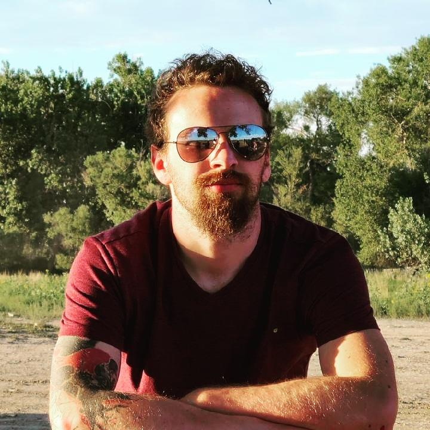

About me
Hello! My name is Shawn Marcus Ray Cannon. I grew up in Colorado Springs and am a second-generation Ford Motor Credit employee in my family. I graduated from the University of Colorado, Colorado Springs with a degree in Philosophy focusing on Art and Humanities. During my time at UCCS, I tutored symbolic logic and was a co-president of the Philosophy club. During this time the philosophy club founded the new initiative of the Phil Dept Library (PDL), where teachers and students could submit a new book to be loaned out to anyone at UCCS utilizing a QR code check out/return system. We also founded the “Pop-Culture Obsessions” nights, where we would watch a film and then spend time discussing different philosophical concepts we found in the movie. I enjoy cooking, gaming, traveling when there isn’t a pandemic, and spending time with my family.
To code or not to code?
One may ask, why does a Philosophy major wish to become a coder? Well, a degree in philosophy has served me in many aspects of my life. The skills I gained from that education is great critical thinking skills which can apply to any career path. The talents needed to master the basic foundations of Symbolic Logic go hand in hand with codding. Lastly, I still think there is something to be said about philosophical concepts sought after by the cutting-edge software engineers. Abstract concepts such as morality, consciousness, or even phenomenology tends to keep cropping up in the realm of technology and software design. However, my desire to code goes beyond an ivory tower degree though. I had always wanted to go into codding since I first started teaching myself HTML as a child. However, when I went to a teacher to ask for advise on how to start working towards making websites, software, and shaping the future of the internet, I was told that there was no future in codding. Small and impressionable I gave up on my dream of becoming a software engineer. We now live in a world which demands talented and creative coders. I believe that my talents and passion will be well placed in this role.